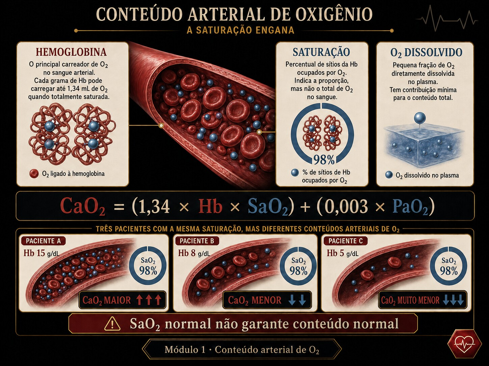

SpO₂ 96% diz que a hemoglobina que existe está cheia. Não diz quanta hemoglobina existe. O que a célula recebe é o conteúdo — e a anemia o derruba com a saturação intacta. A fração dissolvida, que a gasometria exibe, é quase nada.

Fig. 1 · Conteúdo arterial de oxigênio. A saturação descreve ocupação; a hemoglobina determina grande parte da capacidade de transporte. SaO2 normal não garante CaO2 normal.
"Está saturando 96%" — e hipóxica
Cinco atos. A variável escondida é a diferença entre saturação (uma fração) e conteúdo (uma quantidade). (Caso didático; nenhuma conduta é prescrita.)
Ato 1 · a porta
Mulher, pálida, taquicárdica, com sinais de sofrimento tecidual. O oxímetro tranquiliza: "SpO₂ 96% — a oxigenação está boa."
SpO₂ 96%FC 120Hct 32Hb ~10,7lactato 3,9
Ato 2 · a leitura ingênua
Saturação boa = entrega boa? O número da oximetria mede a fração da Hb ocupada — não diz quanta Hb há para ocupar.
Ato 3 · a fenda
CaO₂ = 1,34·Hb·SaO₂ + 0,003·PaO₂. A SaO₂ é só um fator; o outro, a Hb, despencou (Hct 32 ≈ Hb 10,7). O produto cai mesmo com a saturação perfeita.
Ato 4 · decompor
Conteúdo ≈ 14 mL/dL contra ~20 do normal: ~30% a menos de O₂ por dL de sangue, com SpO₂ "tranquilizadora". A oximetria não vê a anemia.
Ato 5 · a ferramenta
A barra empilhada de CaO₂ mostra o tijolo grande (Hb-ligado) encolhendo e o farelo (dissolvido) que quase não conta. É o que o Instrumento desenha.
▸ Revelar a variável escondida
A variável é o conteúdo, não a saturação. SpO₂ mede ocupação percentual da Hb presente; a anemia reduz a Hb presente. Por isso "satura 96%" convive com hipóxia tecidual — e a hiperóxia (subir a PaO₂) quase não ajuda, porque o que ela acrescenta é só a fração dissolvida, minúscula.
Trilha socrática
Siga as setas da saturação ao conteúdo.
SpO₂ 96% — a oxigenação está boa?
A saturação está boa. Mas SaO₂ é a fração da Hb ocupada por O₂, não a quantidade de O₂ no sangue.
Então o que a célula recebe?
O conteúdo: CaO₂ = 1,34·Hb·SaO₂ + 0,003·PaO₂. Repare que a Hb entra multiplicando — não é detalhe, é metade do produto.
Se a Hb cai pela metade e a SaO₂ fica em 100%?
O conteúdo ligado cai pela metade. Saturar 100% de pouca hemoglobina entrega pouco O₂. A oximetria continua dizendo 100%.
Anemia e hipoxemia: somam ou se multiplicam?
Se multiplicam — estão no mesmo produto (Hb·SaO₂). Anemia com hipoxemia derruba o conteúdo mais do que a soma ingênua sugeriria.
E o termo dissolvido, 0,003·PaO₂?
Minúsculo. Em PaO₂ 100 são ~0,3 mL/dL contra ~20 ligados (~1,5%). É a letra-miúda — existe, mas não resgata um anêmico.
Então hiperóxia conserta o anêmico?
Quase nada. Mesmo PaO₂ 500 só acrescenta ~1,2 mL/dL de dissolvido. Sem Hb, não há onde carregar O₂ — o tijolo que faltou não volta com mais pressão.
Instrumento · a barra de conteúdo ao vivo
O conteúdo empilhado: O₂ ligado à Hb (o tijolo) e O₂ dissolvido (o farelo). A barra-fantasma é o normal de referência. Mexa a Hb e veja o tijolo encolher; mexa a PaO₂ e veja como o farelo mal se move.
O₂ ligado à Hb (1,34·Hb·SaO₂)O₂ dissolvido (0,003·PaO₂)normal de referência (~20,4)
DC mantido fixo em 5 L/min para isolar o conteúdo (o débito é dos módulos 3–9). A DO₂ exibida é o conteúdo já entregue por minuto.
Lab · quebre o conteúdo
Cenários ou as três alavancas. O veredito vira e os banners dizem qual termo quebrou — anemia, hipoxemia, ou os dois se multiplicando.
ligadodissolvidonormal (~20,4)
Entrega de O₂ (DC fixo 5 L/min)
—
Anemia mascarada. A SaO₂ está boa, mas o tijolo encolheu: pouca Hb para carregar O₂. O conteúdo cai com a oximetria intacta.
Anemia × hipoxemia se multiplicam. Hb baixa e SaO₂ baixa no mesmo produto — o conteúdo despenca mais do que cada quebra isolada.
Hiperóxia rende pouco. Subir a PaO₂ só engorda o farelo dissolvido. Sem Hb, não há onde carregar o O₂ — o tijolo não volta com pressão.
O conteúdo do caso-semente. Hb ~10,7 com SpO₂ 96%: ~14 mL/dL, cerca de 30% abaixo do normal. A saturação "tranquilizadora" sobre um conteúdo já crítico-limítrofe.
Avaliação · tutor gráfico
Cada questão desenha a barra de CaO₂ computada ao vivo. Leia o tijolo, o farelo e a barra-fantasma — feedback persistente.
0 / 0 respondidas
Honestidade do modelo
Material educacional · não é suporte à decisão. Ensina-se o mecanismo do conteúdo de O₂ — nunca dose, gatilho de transfusão, alvo ou conduta para um paciente específico.
→ A constante de Hüfner é fixada em 1,34 mL/g (a literatura varia 1,34–1,39); o conteúdo é exato dentro dessa convenção. → SaO₂ é tratada como saturação verdadeira; co-oximetria real (carboxi/metaHb) e o viés da SpO₂ na pele escura fogem do modelo. → O DC é mantido fixo em 5 L/min para isolar o conteúdo: na clínica, a anemia dispara compensação por DC↑ (a FC 120 do caso), que este módulo não simula. → Procedimento (conceito físico): a transfusão repõe conteúdo (Hb), não volume nem saturação — apresentado como mecanismo, sem gatilho de hematócrito. Os números são exatos dentro do modelo.
Pontes
→ Braço 1 · Hb & Severinghaus — a curva que liga PaO₂ a SaO₂: de onde vem a saturação que aqui é só um fator.